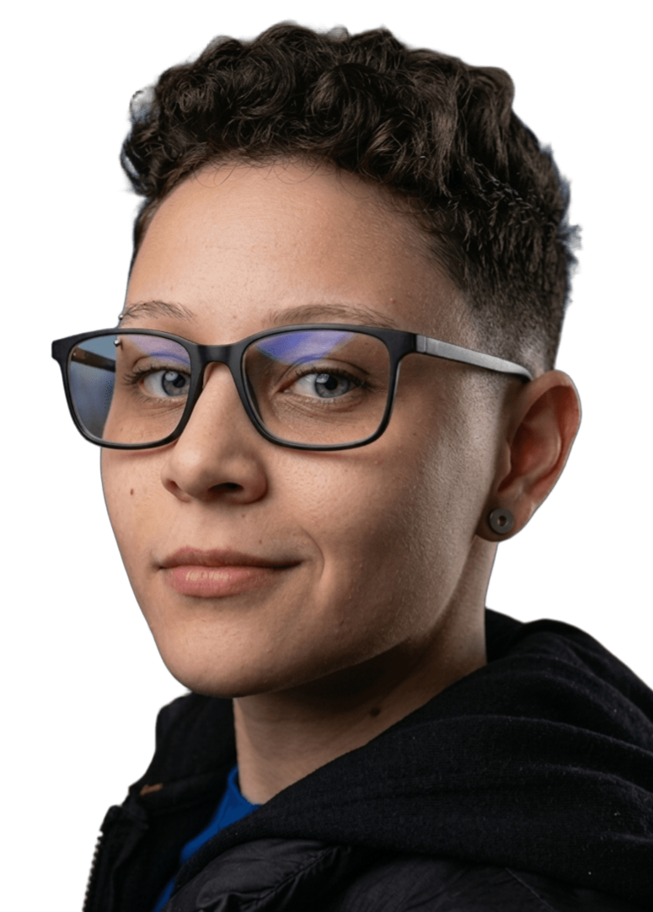

Mayra Matos
Sou Full-Stack Developer
Olá! Eu sou a Mayra Cristine Ribeiro Matos. Sou graduada em Publicidade e Propaganda,
área que me deu uma base sólida em comunicação e estética, mas foi no desenvolvimento
de software que encontrei meu verdadeiro propósito profissional. Hoje, curso Ciência da
Computação para consolidar essa transição de carreira.